- Compatible with:
- Odoo Enterprise (Odoo.sh & On Premise)
- Odoo Community
Cloud Attachment Connector
Store Odoo chatter attachments directly in Amazon S3, Google Drive, or Microsoft OneDrive — keeping your database lean and your files in the cloud
What is Cloud Attachment Connector all about?
This module lets you route chatter attachments from any Odoo model to a cloud provider of your choice. Configure separate connectors for different models using the Connector Routing Rules master, and keep large files out of your Odoo database entirely.
Go to Settings → Cloud Connectors → Connector Routing Rules → New to create a routing rule. Give the rule a name, select the cloud provider (Amazon S3, Google Drive, or OneDrive), and choose the Odoo models whose chatter attachments should be routed to that provider. Enter the provider credentials and click Confirm to activate the rule.
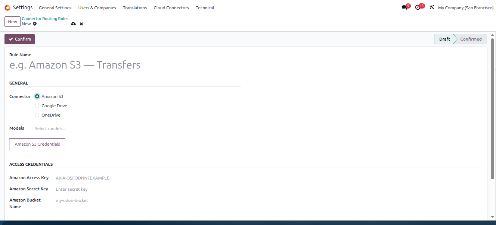
Log in to your AWS Console and navigate to IAM → Access Management → IAM Users. Click Create user to create a dedicated IAM user that Odoo will use to access your S3 bucket. Using a dedicated IAM user ensures secure, credential-based access without exposing your root account.
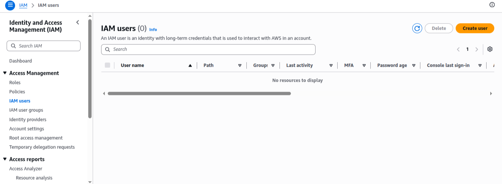
Open the IAM user and go to the Access keys section. Click Create access key to generate an Access Key ID and Secret Access Key. Copy and save both — you will need to enter them in the Odoo connector settings.
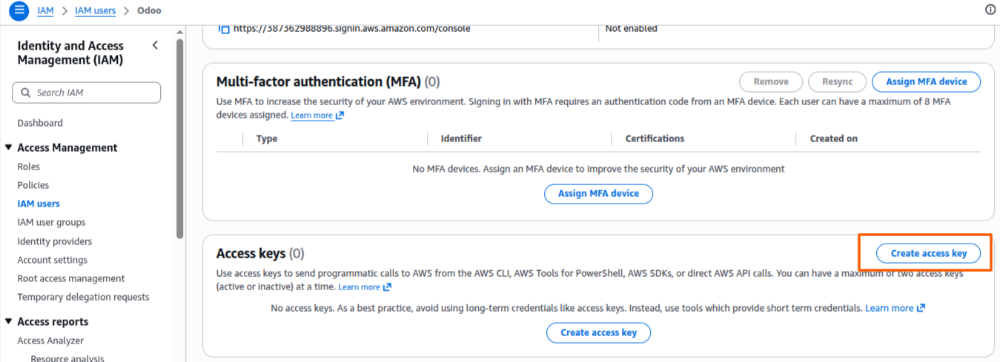
Go to Amazon S3 → Buckets and click Create bucket. Give the bucket a unique name and select your preferred AWS region. This bucket will be used to store all attachments uploaded from Odoo.
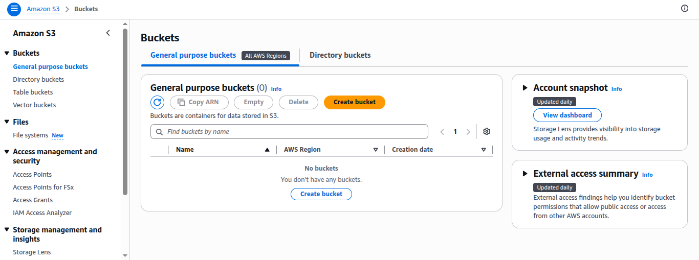
Go to Settings → Cloud Connectors → Connector Routing Rules → New. Set the connector to Amazon S3, select the Odoo models to route, and enter your AWS credentials:
- Amazon Access Key
- Amazon Secret Key
- Amazon Bucket Name
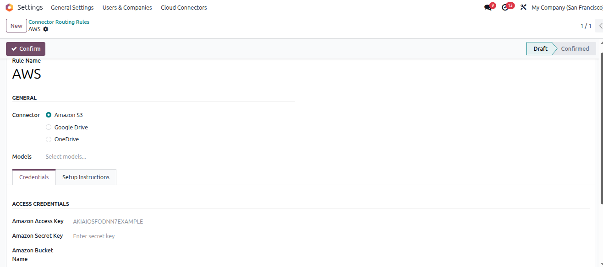
Set the connector to Google Drive, select the Odoo models to route, and enter your Client ID, Client Secret, Refresh Token, and Folder. Click Confirm to activate.
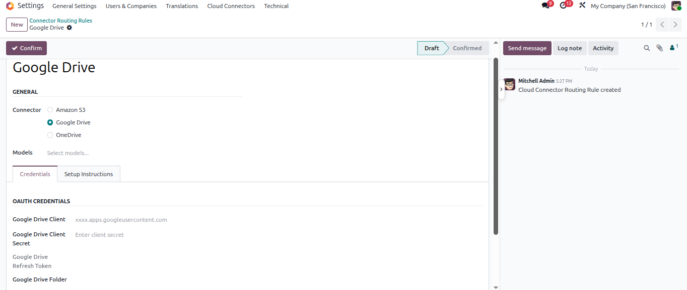
In Google Cloud Console → APIs & Services → Credentials, click Create credentials and select OAuth client ID. This generates the Client ID and Client Secret needed to connect Google Drive with Odoo.

In the OAuth client settings, add your Odoo base URL under Authorized JavaScript origins and add your Odoo URL with the path /google_drive/oauth/callback under Authorized redirect URIs. Once saved, copy the generated Client ID and Client Secret and paste them into the Google Drive connector credentials in Odoo.
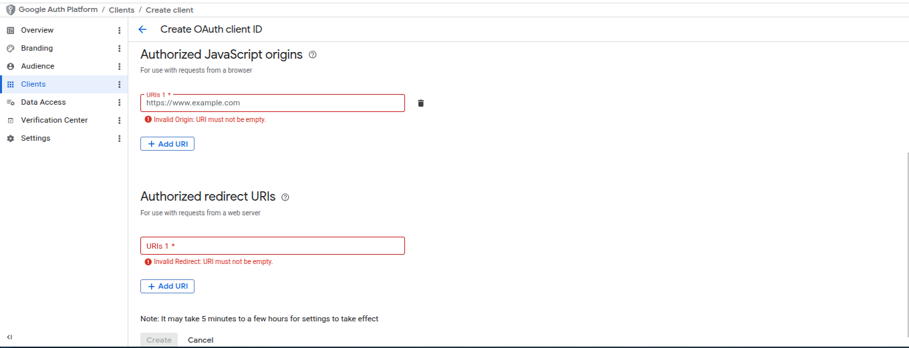
Set the connector to OneDrive, select the Odoo models to route, and enter your Azure app credentials:
- OneDrive Tenant ID
- OneDrive Client ID
- OneDrive Folder Path
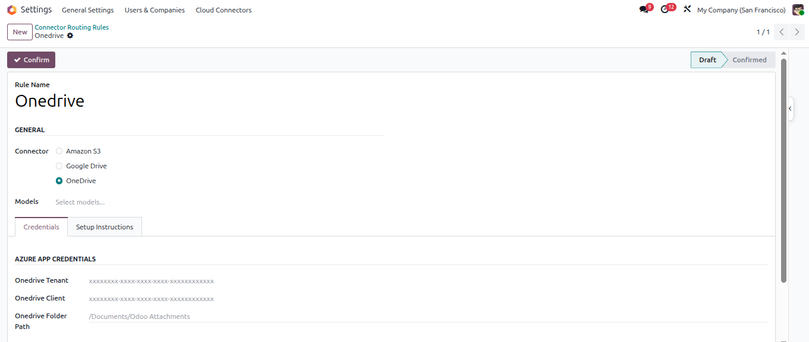
Log in to Microsoft Azure and go to Azure Active Directory → Overview. Copy the Tenant ID shown under Basic information and paste it into the OneDrive connector credentials in Odoo.
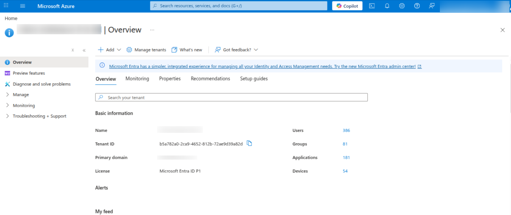
In Azure → App Registrations, open your registered app and go to Overview. Copy the Application (Client) ID and paste it into the OneDrive connector credentials in Odoo.
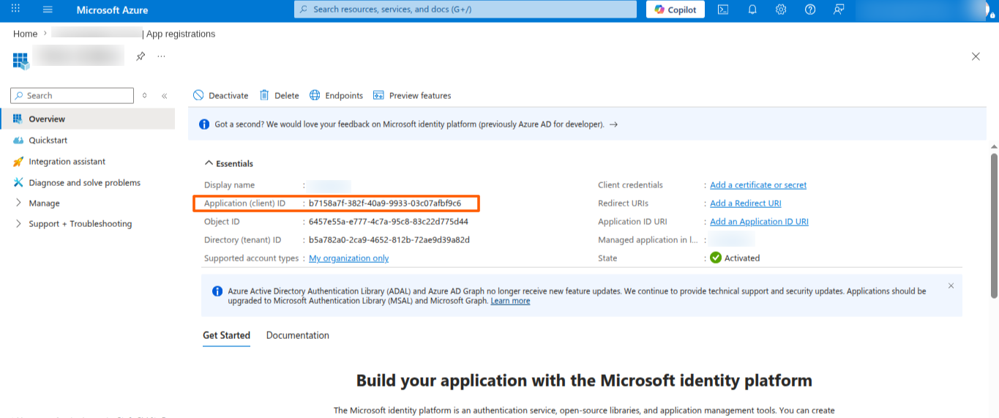
After entering the Tenant ID, Client ID, and Folder Path, click Authorize Microsoft to grant Odoo access to your OneDrive. Once authorized, click Test Connection to verify the setup, then click Confirm to activate the rule.
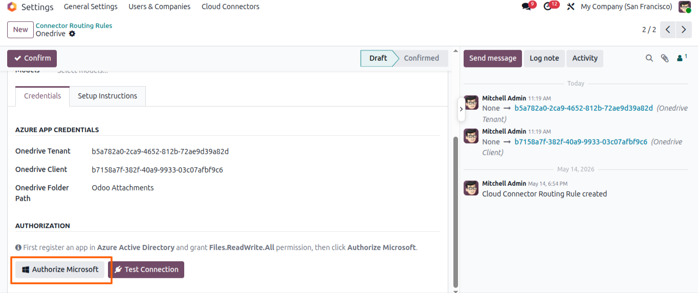